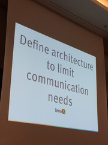

This memo contains some of my impressions from the software architecture summit 2015 in Berlin.
Carola presented nothing new to me in the first keynote. The essence of the keynote was about why sustainable architectures are important and how to achieve this goal. But the way how she delivered the keynote was very good. She pointed out 3 important aspects of a good sustainable architecture:
It was also interesting to hear that in her opinion a software system will never or seldom pass the "one million lines of code" mark, when there is no clear structure in the architecture. Without a clear architecture it is not possible to maintain and evolve a huge software system. Too much time is burned in trying to understand how the different parts of the system interact with each other.
Define architecture to limit communication needs
organizations which design systems ... are constrained to produce designs which are copies of the communication structures of these organizations
E. Wolff: "Bei Architekturanalysen muss man auch auf die Organisation gucken und nicht nur auf den code."
Microservices können helfen kommunikationsaufwand zu verringern.
Die Microservices haben alles in der Hand und müssen sich nicht mit anderen Abteilungen absprechen bei Änderungen/Erweiterungen.
lightweight, ein kernel, der geteilt wird. sehr resourcensparend und schnell.
For microservices it is important to uniform operations:
curl http://host/some.json | json_pp :-)
Quite boring product show of Spring Boot and Spring Cloud.
Nothing noteworthy.
tools, projekte untersuchen, metriken
Nothing noteworthy.
aim42, Stakeholdertabelle / Fragenkatalog,
ATAM -> implizietes wissen explizit machen, git analyse (am meisten geändert, ...)
geldbetrag (oder BWL größe) an issues schreiben, damit management freigabe für verbesserung gibt.
Nothing noteworthy.
Date published: 2015-09-21
Date modified: 2015-09-21
Keywords: software architecture, microservices
{kind=link}
{kind=link}
{kind=link}